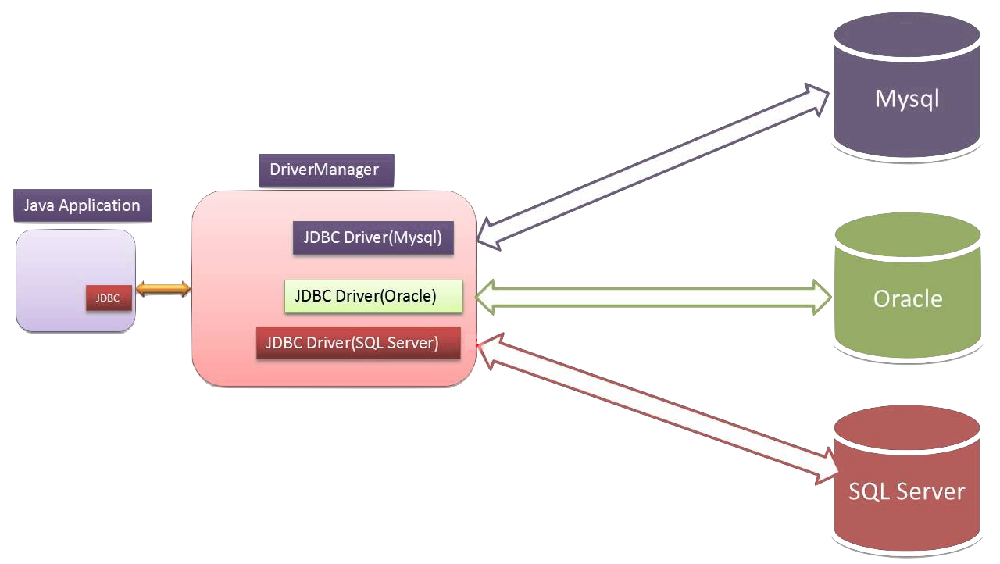
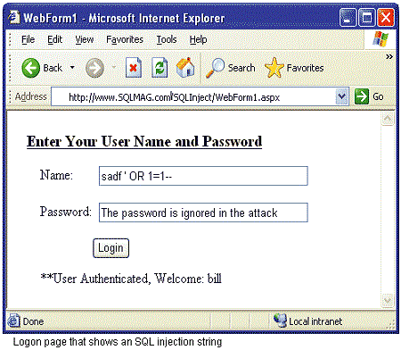

Created by <Academia de Código_>
Java Database Connectivity is a standard API for Java programs to access database management systems
With JDBC we can:
public class ConnectionManager {
private Connection connection = null;
public Connection getConnection() {
try {
if (connection == null) {
connection = DriverManager.getConnection(dbUrl, user, pass);
}
} catch (SQLException ex) {
System.out.println("Failure to connect to database : " + ex.getMessage());
}
return connection;
}
public void close() {
try {
if (connection != null) {
connection.close();
}
} catch (SQLException ex) {
System.out.println("Failure to close database connections: " + ex.getMessage());
}
}
}
public class JdbcUserService implements UserService {
private Connection dbConnection;
@Override
public int count() {
int result = 0;
// create a new statement
Statement statement = dbConnection.createStatement();
// create a query
String query = "SELECT COUNT(*) FROM user";
// execute the query
ResultSet resultSet = statement.executeQuery(query);
// get the results
if (resultSet.next()) {
result = resultSet.getInt(1);
}
return result;
}
}
@Override
public User findByName(String username) {
// ... connection and statements....
// execute the query
ResultSet resultSet = statement.executeQuery(query);
// user exists
if(resultSet.next()) {
String usernameValue = resultSet.getString("username");
String passwordValue = resultSet.getString("password");
String emailValue = resultSet.getString("email");
user = new User(usernameValue, passwordValue, emailValue);
}
// ....
}
It is important to close the connection and statement when no longer needed to release the used resources.
@Override
public User findByName(String username) {
try {
...
if(statement != null) {
statement.close();
}
} catch (SQLException e) {
e.printStackTrace();
}
}
public User getUser(int id, String name) {
...
// create a query
String query = "SELECT * FROM table WHERE id=? AND name=?";
PreparedStatement statement = dbConnection.prepareStatement(query);
// set values for the placeholders
statement.setInt(1, id);
statement.setString(2, name);
// execute the query
ResultSet resultSet = statement.executeQuery();
...
}
Insertion of malicious SQL query via the input data from the client to the application
